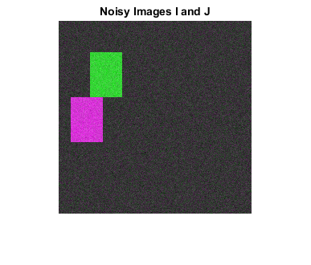
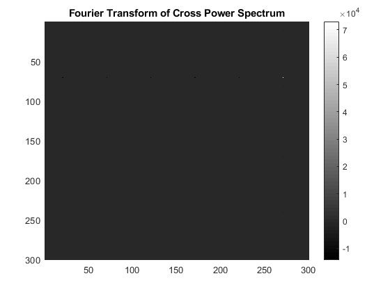
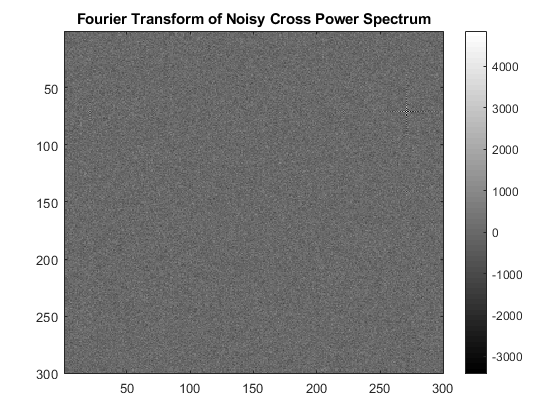
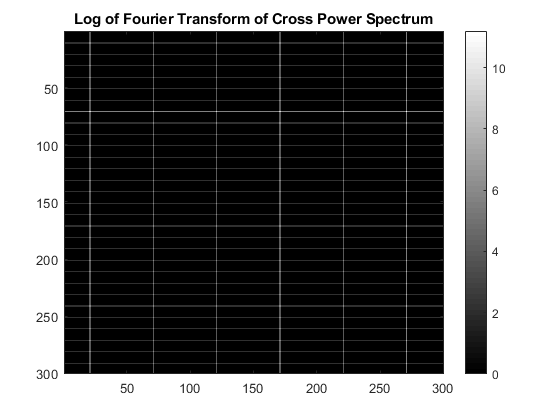
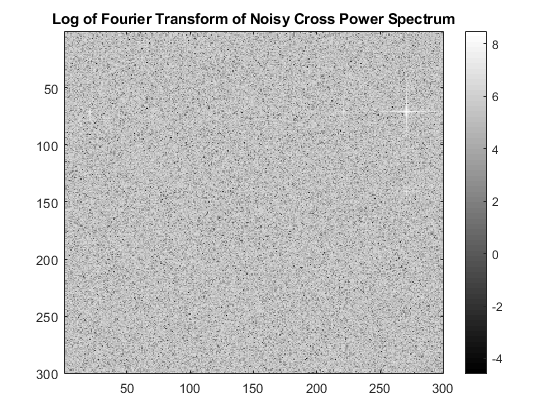
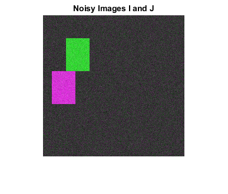
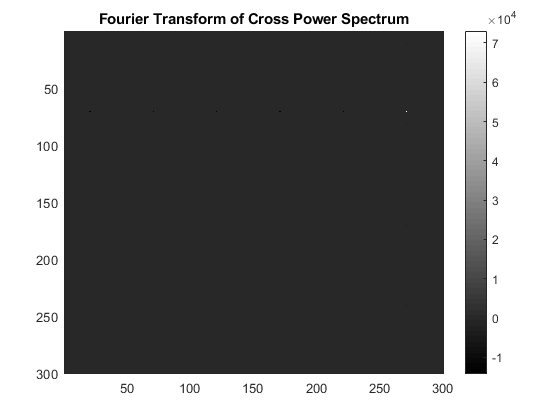
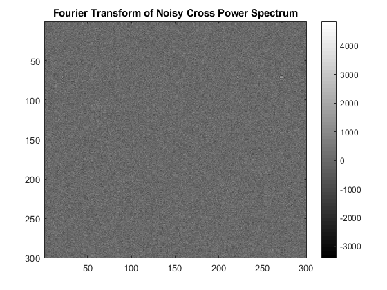
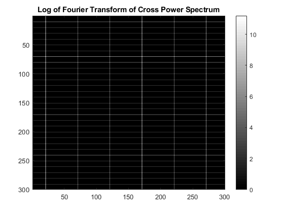
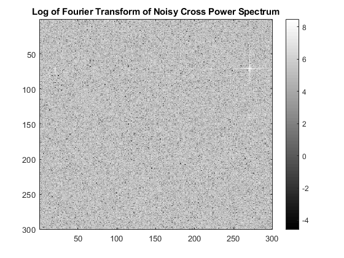

Contents
MyMainScript
close all;
clc;
tic;
Creating Test Images
Image I
I = zeros(300, 300);
I(50:50+69, 50:50+49) = 255;
% Image J - translated I (tx = -30; ty = 70)
J = zeros(300,300);
J(120:120+69, 20:20+49)=255;
Algorithm
Fourier transforms
F_I = fftshift(fft2(I)); F_J = fftshift(fft2(J)); % Cross Power Spectrum(CPS) CPS = (F_I.*conj(F_J))./(1e-5 + abs(F_I).*abs(F_J)); CPS_F = real(fft2(CPS)); % fourier transform of CPS log_CPS_F = log(abs(CPS_F));
Handling Noisy images
noisy_I = I + 20*randn(300);
noisy_J = J + 20*randn(300);
F_I_noisy = fftshift(fft2(noisy_I));
F_J_noisy = fftshift(fft2(noisy_J));
% CPS
CPS_noisy = (F_I_noisy.*conj(F_J_noisy))./(1e-5 + abs(F_I_noisy).*abs(F_J_noisy));
CPS_noisy_F = real(fft2(CPS_noisy));
log_CPS_noisy_F = log(abs(CPS_noisy_F));
Display results
figure; imshowpair(I,J); title('Images I and J') figure; imshowpair(noisy_I,noisy_J); title('Noisy Images I and J') figure; imagesc(CPS_F, [min(min(CPS_F)), max(max(CPS_F))]); colormap(gray); colorbar; title('Fourier Transform of Cross Power Spectrum') figure; imagesc(CPS_noisy_F, [min(min(CPS_noisy_F)), max(max(CPS_noisy_F))]); colormap(gray); colorbar; title('Fourier Transform of Noisy Cross Power Spectrum') figure; imagesc(log_CPS_F); colormap(gray); colorbar; title('Log of Fourier Transform of Cross Power Spectrum') figure; imagesc(log_CPS_noisy_F); colormap(gray); colorbar; title('Log of Fourier Transform of Noisy Cross Power Spectrum')
     
     Comments and review
% On Original Images______________ % As discussed in the paper Cross Power Spectrum(CPS)- % CPS = exp{j2pi(u*x_o + v*y_o), as this is a constant function its FT would be a delta function centred at (x_o, y_o) % The predicted translation agrees with the ground truth % translation values --> the FT of CPS is a black image with a single white point at [X Y] = [271 71]. % This corresponds to a (x_o, y_o) = (270, 70) == (300-30, 70) == (-30, 70) % i.e, due to period nature of FT % % Noisy images_______________ % When noise is added, there is alot of noise in the FT of % CPS and so it is hard to identify the delta (ie a single pixel). The % value at [X Y] = [271 71] is faintly visible and is still the location of max % value in the FT, but this is no longer true when noise levels are % increased. % Time Complexity________________ % FFT-based image registration :: O(NlogN) % Pixel wise comparison :: O(N^2) --> every pixel of the first image has to be compared to every pixel of the second image % Approach for Correcting rotation between two images______________________ % Rotational movement can be deduced in a similar manner using the phase correlation by % representing the rotation as a translational displacement with polar coordinates. % M1(rho, theta) = M2(rho, theta - theta_0) % using phase correlation (as above implemention) angle theta_0 can be easily found out. toc;
Elapsed time is 8.281669 seconds.